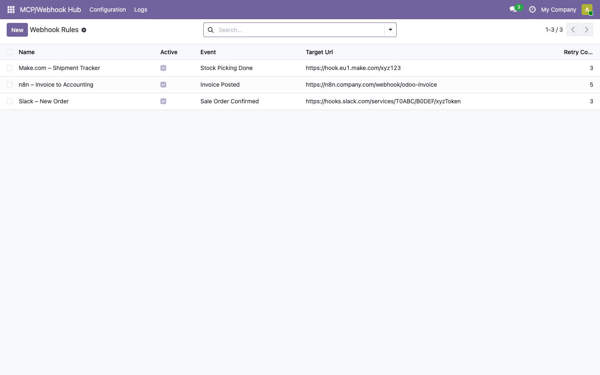
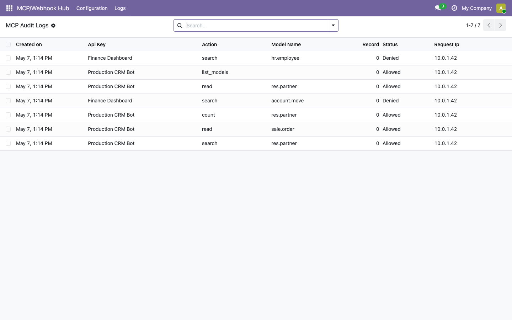
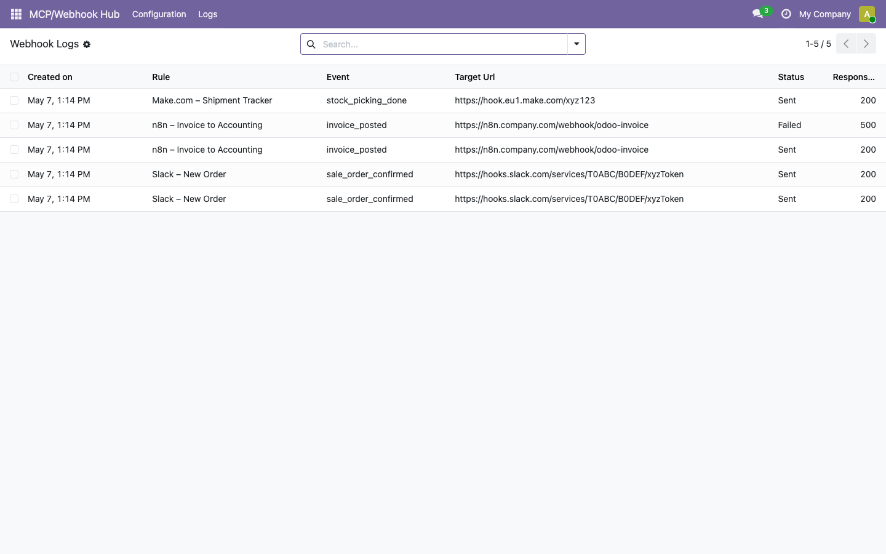
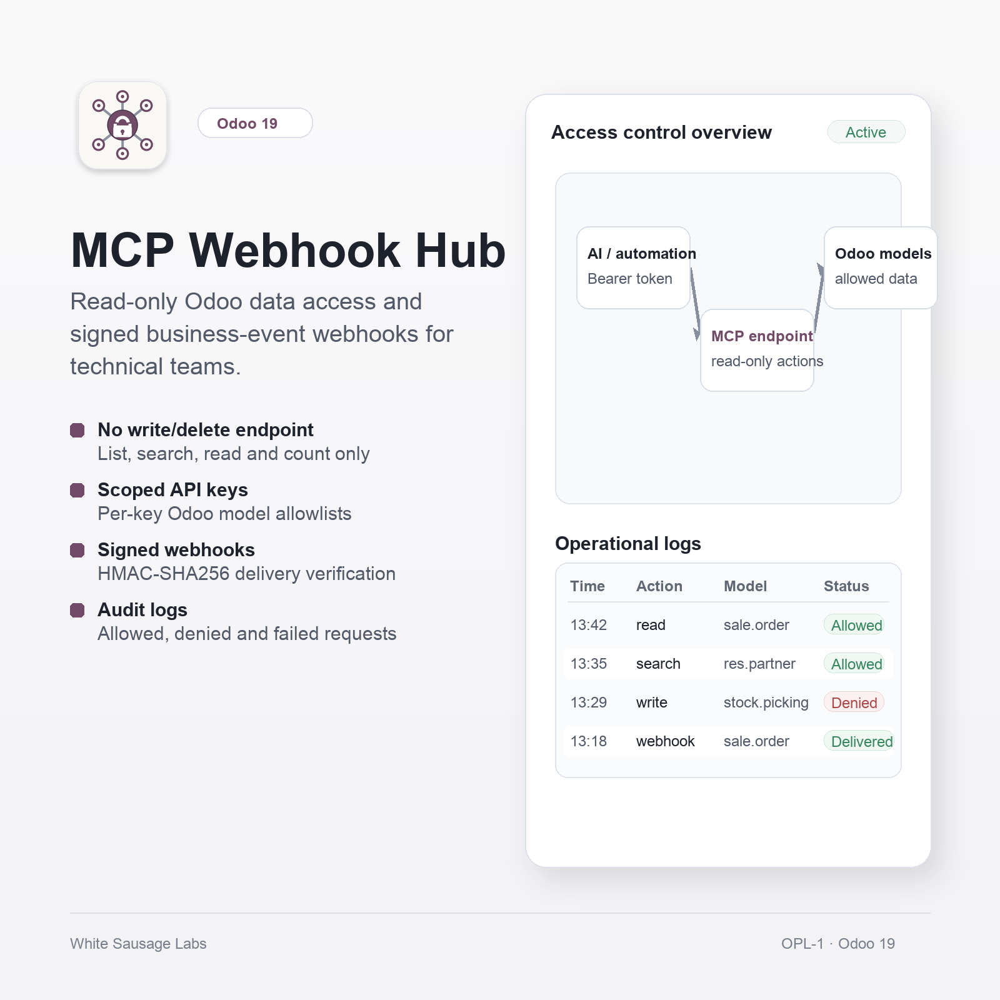

Odoo interface
Configuration and logs use standard Odoo views, permissions, and access groups.

MCP API Keys

Webhook Rules

MCP Audit Logs


MCP Webhook Hub lets technical Odoo teams expose selected data to AI agents and automation systems without enabling write, delete, or raw SQL operations. Each API key is scoped to allowed models, requests are logged, and outbound webhook payloads are signed with HMAC-SHA256.
The v1 MCP endpoint supports list, search, read, and count operations only. No create, write, unlink, or raw SQL access is exposed.
Restrict each key to a model allowlist. Tokens are SHA-256 hashed at rest and displayed only as previews after creation.
Track allowed, denied, and error requests. Webhook deliveries keep status, response code, response body, and error information.
Use POST /gf_mcp_webhook_hub/mcp with Bearer token authentication to provide controlled read access for agents, reporting tools, and workflow systems.
| Action | Description |
|---|---|
list_models | Show models available to the API key |
search | Search records by Odoo domain |
read | Read selected fields from selected records |
count | Count records matching a domain |
Deliver selected Odoo business events to external HTTP endpoints. Payloads are signed with HMAC-SHA256 so receivers can verify authenticity.
| Event | Trigger |
|---|---|
sale_order_confirmed | Quotation is confirmed |
invoice_posted | Invoice or credit note is posted |
stock_picking_done | Delivery or receipt is validated |
Configuration and logs use standard Odoo views, permissions, and access groups.



Support covers installation issues and confirmed bugs in the purchased Odoo 19 version. Custom development, migrations to other Odoo versions, third-party platform setup, and custom integration work are not included. Statutory rights and the Odoo Apps refund policy remain unaffected.